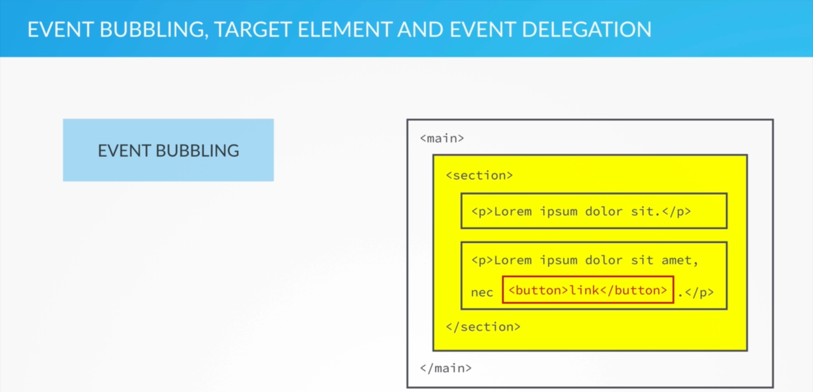
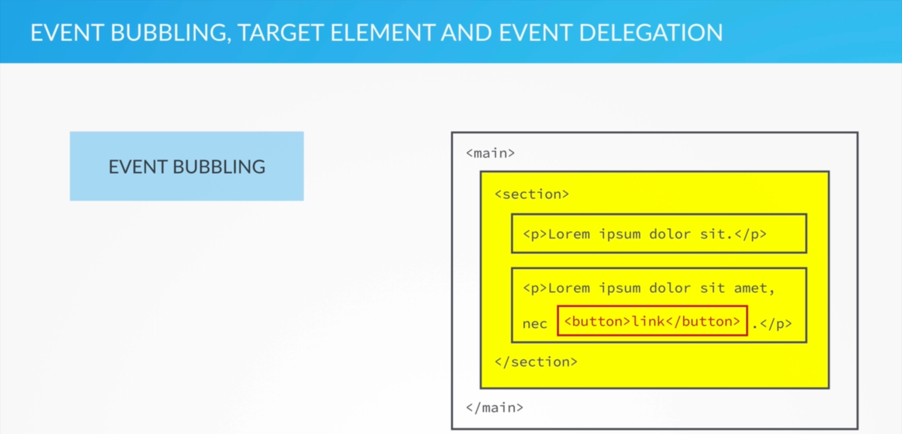

Event Bubbling, Target Element & Event Delegation
Before we know about Event Delegation, we have to know about Event Bubbling and Target Elements.
We'll understand what Event Bubbling is, with the help of the image below:
 In the image above, the <button> tag is the red-bordered button. It shows that, that particular button is being clicked, that means that, right now, the particular click event related to that button is being fired/triggered. Therefore, whenever an event is fired/triggered on a DOM element (in this case the <button> element), then that exact same even is also fired/triggered on its immediate parent element, where the triggering of the event is percolated through the child to its top most parent. In this case, when the <button> element is clicked, it triggers the click event of the <button> element itself, then that click is passed to its immediate parent element, which is the <p> element. Therefore the <p> element's click event is also triggered, then that click event at the <p> element passes the event to its immediate parent, which is the <section> element, and now the click event is triggered at the <section> element and so on... the event is percolated till the top most element (the root element in the DOM Tree) which is the <html> element, and further event percolation stops at the root of the DOM Tree. Here, we can see that the events are bubbling/percolating up inside the DOM Tree and that's why this phenomenon is known as Event Bubbling. The process of Event Bubbling gives rise to Event Delegation. The images given below depict the explanation above, pictorially.

Before completely diving into Event Delegation, we have to understand one more crucial piece of the puzzle known as Target Element. It is basically the element that caused Event Bubbling, i.e., in our case, the Target Element that caused Event Bubbling is the <button> element. This <button> element is our Target Element. The image below depicts what our Target Element is:
The important part is that, this Target Element is stored as a property (known as "target") in the event object. So this means, all the parent elements, on which the event was also fired/triggered will know the Target Element of the event (i.e., where the event was first fired), thereby, the event object at all the parent elements also would have the "target" property that would say that the event was generated by this particular child of yours (which is the Target Element) and so on... Now this brings us to Event Delegation, because of this, event bubbles up in the DOM Tree and if we know where the event was fired, then we can simply attach an event handler to the parent element and wait for the event to bubble up and we can then do whatever we intended to do, with our Target Element and this technique is called Event Delegation. In the example image shown below, we can simply add the event handler to the <main> element.
Therefore, Event Delegation is to NOT setup the event handler on the original element (that we're actually interested in), but to attach it to a parent element and catch the event there, because we know that the event bubbles up. After that, we can then act on the element that we are interested in, using the "target" element property.
In the image above, the <button> tag is the red-bordered button. It shows that, that particular button is being clicked, that means that, right now, the particular click event related to that button is being fired/triggered. Therefore, whenever an event is fired/triggered on a DOM element (in this case the <button> element), then that exact same even is also fired/triggered on its immediate parent element, where the triggering of the event is percolated through the child to its top most parent. In this case, when the <button> element is clicked, it triggers the click event of the <button> element itself, then that click is passed to its immediate parent element, which is the <p> element. Therefore the <p> element's click event is also triggered, then that click event at the <p> element passes the event to its immediate parent, which is the <section> element, and now the click event is triggered at the <section> element and so on... the event is percolated till the top most element (the root element in the DOM Tree) which is the <html> element, and further event percolation stops at the root of the DOM Tree. Here, we can see that the events are bubbling/percolating up inside the DOM Tree and that's why this phenomenon is known as Event Bubbling. The process of Event Bubbling gives rise to Event Delegation. The images given below depict the explanation above, pictorially.

Before completely diving into Event Delegation, we have to understand one more crucial piece of the puzzle known as Target Element. It is basically the element that caused Event Bubbling, i.e., in our case, the Target Element that caused Event Bubbling is the <button> element. This <button> element is our Target Element. The image below depicts what our Target Element is:
The important part is that, this Target Element is stored as a property (known as "target") in the event object. So this means, all the parent elements, on which the event was also fired/triggered will know the Target Element of the event (i.e., where the event was first fired), thereby, the event object at all the parent elements also would have the "target" property that would say that the event was generated by this particular child of yours (which is the Target Element) and so on... Now this brings us to Event Delegation, because of this, event bubbles up in the DOM Tree and if we know where the event was fired, then we can simply attach an event handler to the parent element and wait for the event to bubble up and we can then do whatever we intended to do, with our Target Element and this technique is called Event Delegation. In the example image shown below, we can simply add the event handler to the <main> element.
Therefore, Event Delegation is to NOT setup the event handler on the original element (that we're actually interested in), but to attach it to a parent element and catch the event there, because we know that the event bubbles up. After that, we can then act on the element that we are interested in, using the "target" element property.
But why would we actually apply Event Delegation? There are certain strong use cases for Event Delegation, but out of them all, we have 2 big use cases which are:
- When we have elements with lots of child elements which we are interested in. In the case where, instead of adding event handlers to all of the child elements, we simply add the event handler to the parent element, and then determine on which child element the event was fired.
- When we want an event handler attached to an element that is not yet in the DOM when our page is loaded. This is extremely useful because we cannot add an event handler to something which is not available in our webpage.
Images are taken from: JS Course by Jonas Schmedtmann